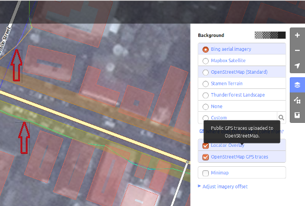

Guías de Inicio Rápido de iD Editor¶
El editor iD es el editor de OpenStreetMap de facto basado en navegador. iD es rápido y fácil de usar, y permite el mapeo desde varias fuentes de datos tales como satélite e imágenes aéreas, GPS, Field Papers o Mapillary.
El editor iD es una gran manera de editar cambios pequeños y fáciles que no requieren las funciones avanzadas de JOSM (un más avanzado editor de mapas). Este capítulo muestra los conceptos básicos de edición con el iD.
Iniciar el iD Editor¶
El iD editor requiere una conección activa a Internet
Abra su navegador de Internet y vaya a la Página Web de OpenStreetMap en https://www.openstreetmap.org.
Inicio de sesión usando su cuenta de OpenStreetMap.
Encuadre y haga zoom en el mapa al área que desea editar. Puede desplazarse manteniendo pulsado el botón izquierdo del ratón y arrastrando el mapa al área deseada.
Click en la pequeña flecha junto a Editar y, a continuación, haga click en Editar con iD (editor en el navegador).


- [1] Editar panel de características: Este panel muestra las etiquetas del objeto
seleccionado en el mapa. Puede agregar o editar etiquetas desde este panel.
[2] Herramientas: Este panel muestra las herramientas básicas de edición.
[3] Panel de mapas: Este panel muestra varias funciones de configuración.
- [4] ** Panel de información:** Este panel muestra información diversa, como
la barra de escala y qué usuarios han contribuido a la zona.
Configuración de la capa de fondo¶
Haga click en el botón de Background settings botón o utilice la shortcut key b.


Para cambiar el nivel de brillo haga click en uno de estos cuadros, los niveles son 100%, 75%, 50% y 25%

Usted también puede cambiar la capa de fondo en función de su proveedor de mosaico deseado (el valor predeterminado es Bing Aerial Imagery).
Puede agregar sus propios mosaicos de mapa haciendo click en Personalizar. Por ejemplo, si desea añadir un Papel de Campo [1], haga click en Personalizar y, a continuación, haga clic en el icono de lupa (búsqueda) para abrir la siguiente ventana:

Introduzca su URL de la foto instantánea de FieldPaper, que será algo como esto: http://fieldpapers.org/snapshots/cqhmf2v9#18/37.80593/-122.22715
Para mostrar pistas GPS de tu equipo (formato GPX), arrastre y suelte el archivo GPX en el editor iD.
Para habilitar OpenStreetMap GPS traces haga click en el cuadro. En la siguiente imagen, trazas GPS públicas se muestran en varios colores, indicando la dirección del viaje.

If there is imagery offset, it can be corrected by clicking Fix Alignment.

Haga click en los botones de navegación para mover las imágenes. Haga click en el botón de reinicio para volver a la posición predeterminada.

Adición de puntos¶
Para agregar un nuevo punto, haga click en el botón Punto . 
El cursor del ratón se convertirá en el signo de más (+). Ahora, haga click en una posición que conozca para marcar un lugar. Por ejemplo, si usted sabe que hay un hospital en su área, haga click en la posición del edificio del hospital.

Observe que se añade un nuevo punto. Al mismo tiempo, el panel de la izquierda cambia para mostrar un formulario donde puede seleccionar atributos para el objeto. Haga click en Hospital Grounds para etiquetar el punto como un hospital.

Puede utilizar los formularios para llenar información detallada sobre el punto. Usted puede llenar el nombre del hospital, dirección o/y otra información adicional. Tenga en cuenta que cada función tendrá diferentes opciones, dependiendo de qué etiquetas escoja desde el panel de función.
Si usted comete un error, como un lugar equivocado, puede mover el punto a una nueva ubicación manteniendo pulsado el botón izquierdo del ratón en su punto y arrastrándolo. O, si desea eliminar el punto, haga click con el botón izquierdo del ratón sobre el punto, active el menú contextual haciendo click con el botón derecho del ratón y haga click en el botón que parece un bote de basura.

Un «punto» creado en el editor iD es en realidad un «nodo» independiente con un conjunto de «etiquetas» en él.
Dibujo de líneas¶
Para agregar una nueva línea, haga click en el botón de Línea. 
El cursor del ratón se convertirá en un signo de más (+) . Encuentre un camino que no ha sido dibujado en el mapa y lo trácelo. Haga click una vez en un punto donde comienza el segmento de carretera, mueva su ratón y haga click para añadir puntos adicionales. Haga doble click para terminar el proceso del dibujo. Observe el panel de la izquierda.

Igual que con un punto, seleccione las etiquetas apropiadas para su línea.
Puede arrastrar los puntos de la línea haciendo click en el botón izquierdo del ratón en un punto y arrastrando.
También puede mover toda la línea seleccionándola y eligiendo Mover Herramienta. A continuación, arrastre la línea a una nueva posición.

Cuando haga click en el botón izquierdo del ratón sobre un punto individual (nodo) en la línea y haga click en el botón derecho del ratón para activar el menú de contexto, usted verá estas herramientas:
Borrar punto de la línea.
Desconectar el punto de la línea.

Dividir una línea en dos líneas desde el punto que ha seleccionado.

Al hacer clic en botón izquierdo del ratón sobre una línea (pero no en un punto), usted verá estas herramientas:
Borrar línea.
Crear un círculo de una línea (activo sólo si la línea está cerrada)

Mover línea
Formar un cuadrado de una línea (activo sólo si la línea está cerrada)

Invertir dirección de línea (buena para los ríos y las calles unidireccionales)

Una «línea» creada en el editor iD es realmente un «camino» con las «etiquetas» en él.
Nota
Una nota especial sobre Eliminación: en general debe evitar eliminar asignación de otras personas si solo necesita mejoría. Puedes borrar tus propios errores, pero usted debe tratar de ajustar objetos mapeados de otras personas si necesitan cambios. Esto conserva la historia de los elementos de la base de datos OSM y es respetuoso para otros compañerosa mapeadores . Si en verdad sientes que algo debe suprimirse, considere preguntar primero al mapeador original o a una de las listas de correo electrónico de OSM.
Formas de dibujo (polígonos)¶
Para agregar una nueva forma de múltiples lados, haga click en el botón Área.

El cursor del ratón se convertirá en un signo de más (+) . Intente rastrear un edificio usando las imágenes como guía.
Usted notará que el color de su figura cambiará dependiendo de los atributos que se asignan a él.

Las herramientas que están disponibles cuando usted seleccione una forma y activa el menú contextual con el botón derecho del ratón son similares a los haga click en una línea.
Un «Polígono» en el editor iD es realmente una «vía cerrada» con las etiquetas en él.
Dibujo de multipolígonos¶
A veces tienes que dibujar un polígono que no sólo tiene un contorno exterior, sino también uno o más contornos interiores. Piensa en edificios con patios interiores o lagos con islas. No dibuje todas estas formas en una línea para que el contorno interior suspender desde el contorno exterior. Mejor, dibuje estos contornos separados, adjunte etiquetas sólo al contorno exterior, seleccione todos los contornos y presione c para combinarlos en lo que se llama un multipolygon.

Al seleccionar cualquiera de los contornos de la multipolígono recién creado, usted puede ver en la izquierda a que multipolígonos pertenece

Guardar los cambios¶
Cuando (y si) desee guardar las ediciones en OpenStreetMap, haga click en el botón Guardar. El panel de la izquierda mostrará el panel de carga.

Escriba un Comentario sobre las modificaciones y haga click en Guardar.
Nota
Si ha editado la misma característica (punto, manera o zona) al mismo tiempo que otra persona lo hacía, recibirá una advertencia de que las modificaciones no pueden ser cargado hasta que se resuelvan las conflictos - elige qué ediciones aceptar y carga tus cambios. La resolución de conflictos a menudo implica aceptar las otras ediciones de las personas, en cuyo caso probablemente desearás volver a la función en cuestión y editar nuevamente (**esta vez salvar pronto después de la edición para intentar evitar un conflicto nuevo!*).*
Añadir información adicional y etiquetas personalizadas¶
Cuando esté editando un objeto, verá una tira de íconos en la parte inferior del panel atributos. Puede agregar información adicional haciendo click en estos íconos:
Añadir elevación

Añadir notas

Agregar contactos / teléfono

Agregar etiqueta de origen

Añadir Sitio Web

Añadir información de accesibilidad

Añadir enlace de la Wikipedia

O, puede agregar etiquetas personalizadas haciendo click en All tags. 
Esto mostrará todas las etiquetas ajuntas a la función.

Haga click en el signo de más (+) para agregar claves y valores o haga click en el ícono de basurero para eliminar etiquetas.
¿Qué sigue?¶
Pruebe la documentación de LearnOSM, de la que deriva este Inicio Rápido: https://learnosm.org/en/beginner/id-editor/
Sitio web: https://wiki.openstreetmap.org/wiki/ID